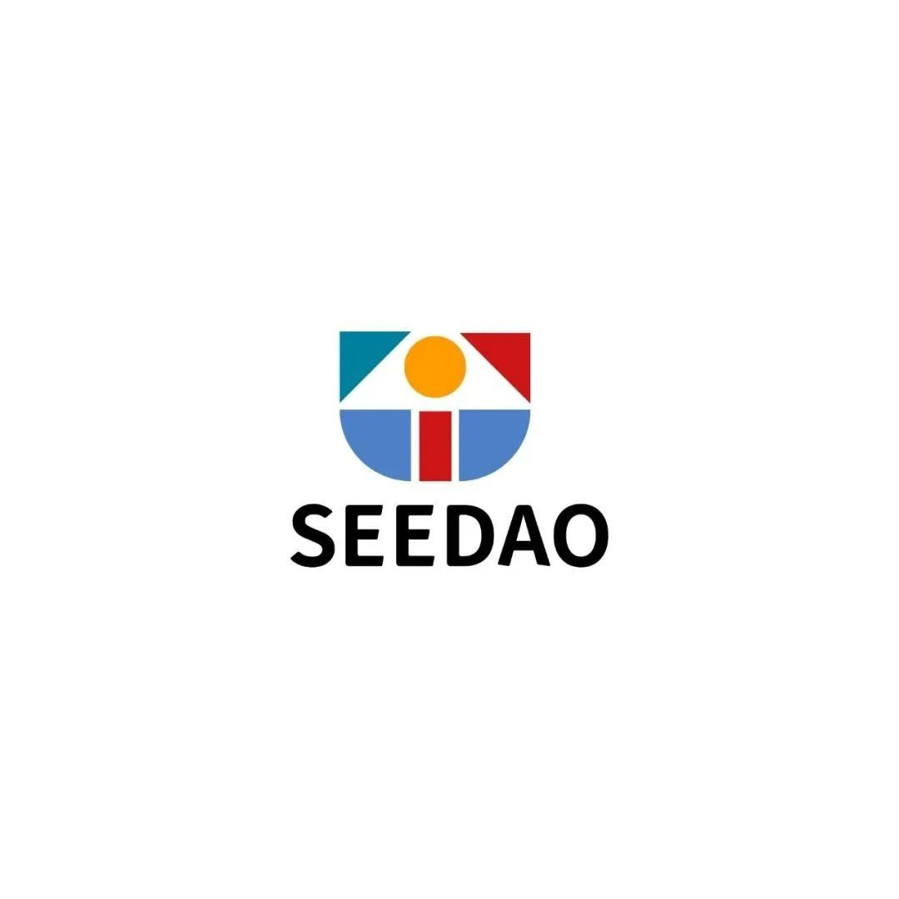

SeeDAO治理架构 草案
作者: SeeDAO
SeeDAO治理架构 草案

目前社区discord已有2322人，绝大部分是创作者，已经建立 8 个公会（除投研公会启动稍晚，其他公会都建立了运营小组），孵化 5 个项目（其中ShanghaiDAO最为出名），创作者团体“木棉浪潮”入驻合作区……随着越来越多的创作者涌入，越来越多的项目开始筹备，不少新加入社区成员也产生了疑惑：这些公会都是做什么的？我的想法怎样能够转化成项目？公会和项目又是什么关系？我和别的成员应当怎样协作？我做出贡献可以得到什么激励反馈？以上这些问题由谁来决定？这个草案主要介绍SeeDAO目前的治理结构和运作方式。请特别注意，这篇文章提出的规则也是过渡性质的，有效期到社区NFT持有者数目达到1000人为止。届时在社区1000人纪念大会上，我们将同所有社区会员一道，探讨和决定社区治理结构和运作方式。SeeDAO治理架构
凡持有SeeDAO NFT者都是社区正式成员，拥有参与治理的权利。定期召开的SeeDAO社区大会（即全体SeeDAO NFT持有者）是社区最高权力组织。原则上，所有的事情，包括公会和项目的建立、经费运算等都要经过社区大会讨论决定。如果所有细节和突发情况都交给社区全体成员讨论，将会极大地消耗成员精力和热情，过于频繁地召开大会是不现实的。因此，社区有必要在设置一个协调委员会。其主要职责是宏观协调各个公会的工作、孵化社区项目以及打理社区金库。鉴于社区目前处于起步状态，故先中心化地选择了7名社区核心贡献者组成了“临时协调委员会”，他们分别是：唐晗 — 主要发起人、宣传公会主要发起人
baiyu — 主要发起人、翻译公会主要发起者
盖井 — 木棉浪潮主理人、创作者、合作区代表，可以为SeeDAO带来关于社区治理的深度思考
coffee — 正在组建投研公会，用自己的代币质押帮SeeDAO投票，为社区挣得第一笔资金做出了贡献，同时也是烤仔社区和conflux社区重要参与者，可以为我们带来社区治理的丰富经验
alex — 开发者公会主理人，全栈工程师，Defi科学家，帮助社区评审项目可行性以及带领开发者实际落地社区项目
wanqi — 建筑师公会主理人，已经帮助SeeDAO搭建圣诞蒙面舞会场馆，还将继续建设ShanghaiDAO项目
kc — 产品公会主理人，在主持SeeDAO官网设计以及其他项目的设计工作
在社区过渡期间，临时协调委员会暂时执行决策，过渡期结束以后，协调委员会将由社区大会推举产生。协调委员会每周一次公开例会，并根据议程性质邀请相应 公会/项目 的代表，或是相关领域的专家参会，其他社区成员都可以加入会议旁听，并在问答环节参与讨论。SeeDAO作为一个偏创意产出导向的DAO，需要有具体落地项目的组织单元 — 公会和项目。公会和项目是生产的基本单位，是SeeDAO的核心组织单元。作为正经的产出单位，公会和项目 都需要经过 协调委员会 的审核才能成立，并在官网进行信息展示，同时获得社区金库支持和SeeDAO NFT发放权利。纵向公会是完成一个项目所需要的各个专业领域人才的集合。目前我们已经组织起了运营、宣传、翻译、设计、产品、开发者、投研、元宇宙建筑等公会，随时为希望在SeeDAO中发起项目的小伙伴们提供相应的专业支持。对于新加入的小伙伴们来说，如果你暂时没有明确的创作想法，不妨加入到某一个公会当中去，通过公会参与到项目协作中去，公会还会进行专业知识与经验的免费分享，帮助大家培养技能。横向项目是社区孵化项目，是产出落地的最直接形式，承担着社区最后产出的重要功能，项目必须生长于社区内部。许多创作者不乏好想法，但是个人精力和专业知识面有限，很难将想法落地。在SeeDAO，大家就可以把胡侃各种奇思妙想，只要经过充分讨论形成提案并最终获得社区支持，就可以成为社区孵化项目。最后在各个公会去寻找合适的专业人才，一起把项目做下去。比如说，目前在社区内备受关注的“ShanghaiDAO”项目，最初由社区成员@Zephyr提议发起，在社区讨论的过程中不仅进一步完善了想法，通过运营和宣传小伙伴的协作，还匹配到了元宇宙土地提供者、元宇宙建筑师、上海城市历史研究者等多方面的专业人士，目前项目正在积极推进。公会和项目运行中出现资金需求或是其他需求，都可以向社区协调委员会申请帮助。公会和项目的核心成员必须是持有SeeDAO NFT的社区成员。在框架设计图的最底层，我们排列了一个重要模块 — 孵化区。孵化区是SeeDAO的基础，也是所有项目、活动和公会得以产生和生长的肥沃土壤。我们认为，真正的好项目往往不是从顶层精心设计出来的，而很有可能是从茶余饭后的闲聊或是日常兴趣的琢磨中“冒”出来的。因此，我们希望在社区中营造出轻松的创造氛围。当产生了想法，不管听起来是多么“不靠谱”，都可以发起一个兴趣小组，经过一定讨论形成提案以后，就有机会升级成一个项目或者公会，在SeeDAO中匹配合作者，将其变为现实。为了让社区项目获得资金支持，以及维持产品和开发等公会的硬性开支，客观上需要快速建立社区金库，所以CryptoC 先打入了10Eth到社区金库 seedaotreasury.eth。社区金库收支由协调委员会管理。需要强调，发起人只是 SeeDAO 重要参与者，社区金库将来应该交由多签账户控制。目前社区在过渡阶段，大家彼此并不熟悉，社区也没有积累足够的声誉标识，所以过渡期间金库不宜贸然交由多人控制（万一出现作恶者，换届时不交出多签权限，会造成极大影响)。当你加入SeeDAO，你可以……
以上介绍了SeeDAO治理框架的各个模块。那么对于一个刚加入SeeDAO的用户，怎样可以参与到SeeDAO的活动中去？任何新加入的小伙伴，可以有三类选择，一是进入到自己感兴趣的小组当中，或者发起目前没有的兴趣小组，兴趣小组是一个很轻松愉快的地方，蕴含着无限可能。二是选择加入当前的公会或者项目，这里专业性更强，你可以在里面获得专业技能培训，并参与项目实践。三是直接在聊天室参与讨论。至于是否获得NFT则需要根据公会或者项目组的发放流程来定。兴趣小组需要以提案的形式向协调委员会申请成为项目或者建立公会，以获得社区全面支持。作为社区的一员（持有社区NFT），小伙伴们有权选举和被选举成为协调委员。